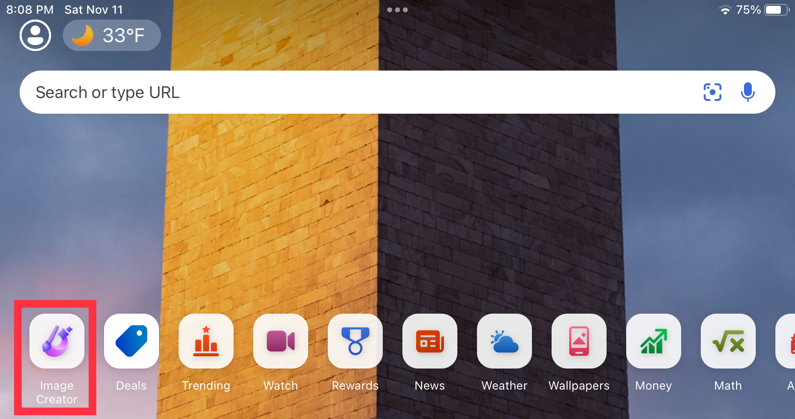
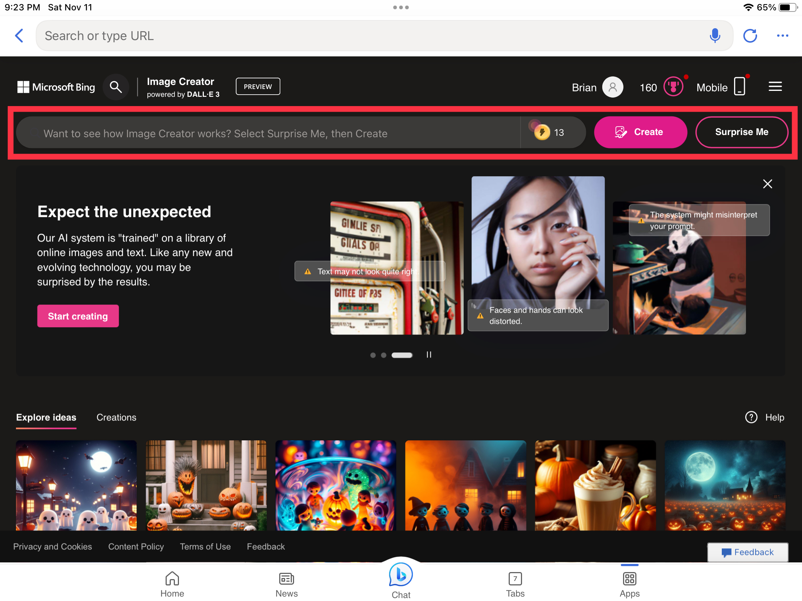

<ui:composition xmlns="http://www.w3.org/1999/xhtml"
	xmlns:f="http://java.sun.com/jsf/core"
	xmlns:h="http://java.sun.com/jsf/html"
	xmlns:p="http://primefaces.org/ui"
	xmlns:ui="http://java.sun.com/jsf/facelets"
	template="../WEB-INF/templates/master.xhtml">

	<ui:define name="content">

<style>
	.centered {
 	   text-align: center;
	}
	.fixed-size-img {
      	  width: 230px; 
     	  height: 100px;

    	}
        img {
         display: block;
          margin-left: auto;
          margin-right: auto; 
	}
 .bold{
      font-weight: bold;
    }
	.img-1 {
      	  width: 500px; 
     	  height: 289px;
    	}
      .img2 {
      	  width: 500px; 
     	  height: 400px;
    	}

</style>

<p> 
<h1 class="centered">
                           Bing Ai Art Creator App
</h1>
  <p class="centered bold">
To view our video tutorial, go th this
 <a href="https://www.youtube.com/watch?v=nr73NloZeN8" target="_blank">link</a>


<p>  
This page will show you what the bing ai creator is and what this ai app is.
</p>
<p>                        
So you have to go to the App Store on your mobile device and serch "bing". 
</p>
 


                        
                        
                        
                    
<p>                                   
so, when you are on the bing app, you might have a "sign in" screen on your device.
you need a micsoft account. you whill need to sign in to your micsoft account 
if you don't have a micorsoft account or don't know what it is, you can go to this
    <a href="https://www.youtube.com/watch?v=80ow9FoMDvA" target="_blank">link</a> 
</p>

<p>
When you are signed in, you whill be on the homepage whith manny options. 
You can check those out later, but we are here for bing ai creator, not anything
else. So, scroll over till you see the paintbrush and picture icon. Click
on it. 

	

<p>
once you have clicked the "image creator" icon, it whill bring you to a new page.
On this page, you will see a lot of pictures,Thoes are what pepole already made. you will have to click the black texet bar and type what you whant it to look like.  
</p>	


	
<p>
the lightnig bolts right by the text bar, those are calld boosts. Boosts make you wait less for your picture to be ready, but you can still genorate pictuers without boosts, but it will take longer.
</p>
<p>
now you know evrything about bing AI image creator! you can now use your imagination to genorate any picture! but before you leve, you can check out our wall of inserition,and also tips and tricks!


<p>

🧠TIPS AND TRICKS🧠
</p>
<li>
when you are low on ideas, you can alwas use the "suprise me" buttun an the system will wright you a promp
</li>
<li>
if you still have questions, scroll all the way down on the home page and bing has 7 "Frequenyly asked questions" and if you click the drop down arrow, it will have the answer to the question.
</li>
<li>
if you want some thing in a specific style, like comic, you would put "comic" at the end of your promp and you can be really specific, like "harry potter styled."You can go on, and on, with styles.  
<h2 class=centered>
ideas
</h2>


</ui:define>


</ui:composition>


